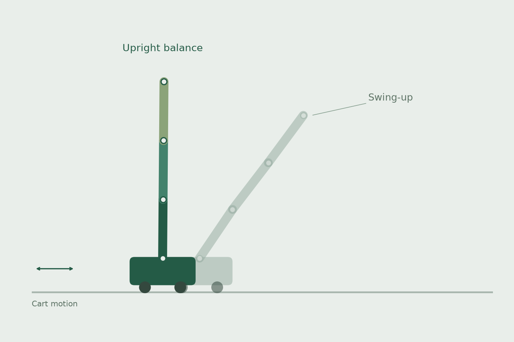
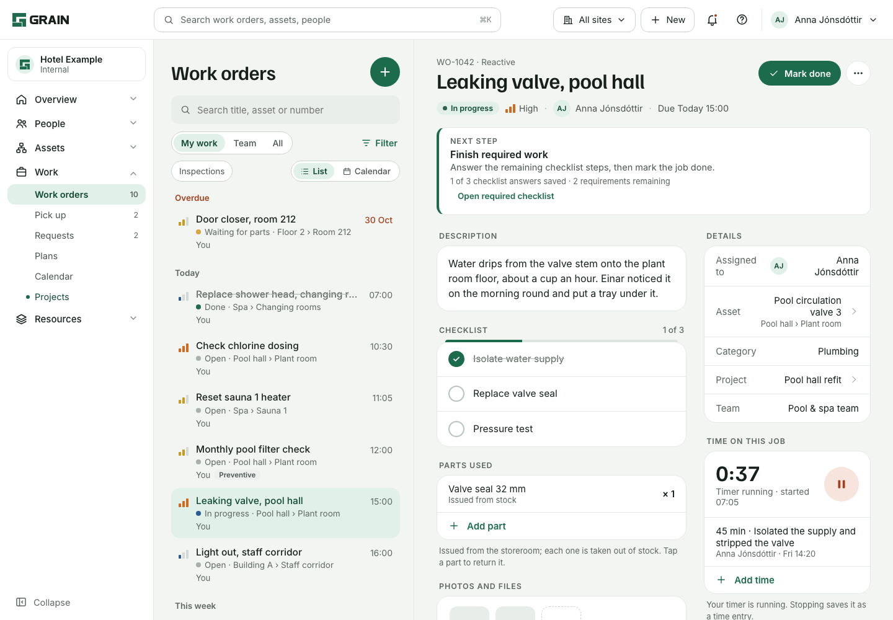
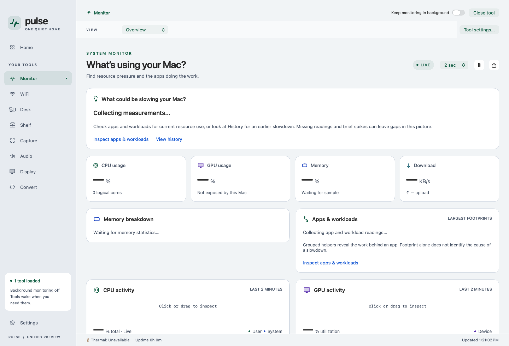
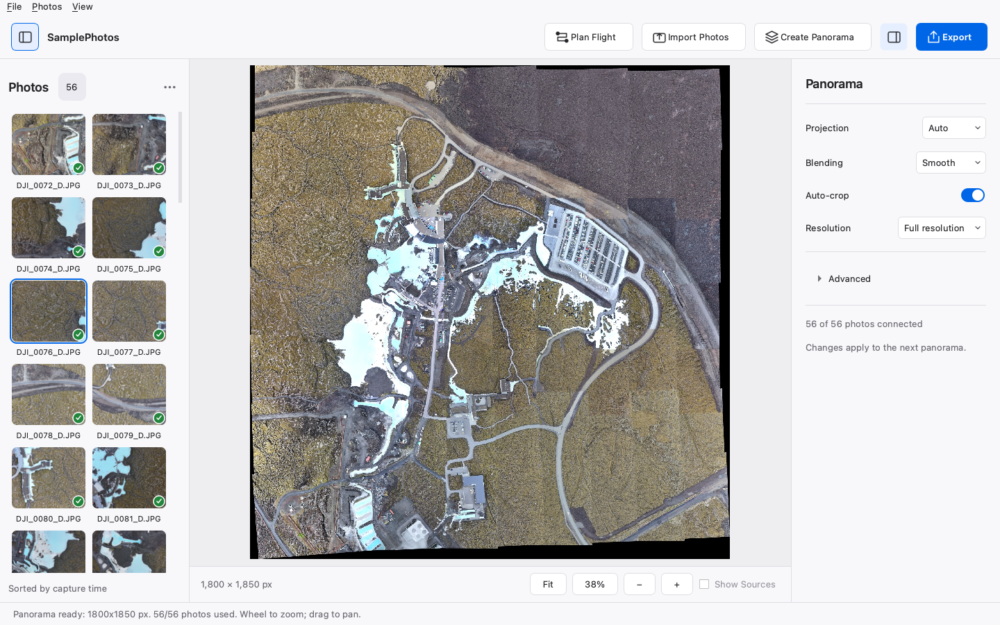

Chapter 01
Portfolio
11 entries
-
012025
Controls · Hardware
M.Sc. thesisPlanar CubeSat
Air-bearing satellite I designed and built for my master’s. Eight on/off thrusters, one shared MPC for the rig and the digital twin.
0.024 m position error · 0.51° attitude error · 16.7 Hz

-
02Jan 2026 – Mar 2026
Controls · Simulation3D Satellite Control
The planar testbed extended to six degrees of freedom: thrusters for translation, reaction wheels for attitude, and a browser tool for inspection paths.

-
03July 2026
In development
Hardware build in progress
Software tests passedPlanar Robotic Arm
Two planar arms, one chessboard. The PC plans collision-aware slides. ESP32 boards run the servos. The published checks are software tests. Hardware is still being built.

-
04Mar 2026
Controls · SimulationN-Link Inverted Pendulum
Nonlinear MPC for a cart with one to eight links. Deadline-safe published runs are for one to five links. Six and seven are quality-only. Eight has no converged public winner. No hardware claim.

-
052024
Mechanical · Design & testingLava Rock Crushing System
Undergraduate capstone: jaw crusher, hammer mill, and a geothermal dryer for lava rock. FEA, compression tests, and a scaled 3D-printed prototype.

-
06Oct 2026
Mechanical · CFDSteam Bath Ventilation Improvement
Hot upper layer, cold floor, and a faceful of steam at the door. I compared six ventilation layouts in CAD and OpenFOAM and recommended removing the central cylinder and adding three 200 mm low vents.

-
07Mechanical design
RoboticsRobotic Arm Development
Three arms: a modular NEMA 17 arm with printed gearboxes, a foldable desktop arm on MG995 and MG90S servos, and the planar MG995 arm used for chess.

-
082026 – Present
Software · In productionGrain / CMMS
Facility software I designed and built: requests, work orders, assets, plans, and inventory. In production since November 2026. The screenshots are interface previews with example data.

-
09Software
iOS automationiOS Organizer
A local workflow that inventories an iPhone, previews a Home Screen layout, and writes it only after a backup and a review. Early release, not a claim of universal layout support.

-
10Software
Native macOSMac Performance Monitor
Pulse for Mac, a SwiftUI monitor for CPU, GPU, memory, disk, network, and processes on Apple silicon. 2.0 preview. Missing sensors stay blank.

-
11Software
Image processingPhotomerge
Desktop tool for stitching overlapping photos, checking control points, and exporting the panorama. A companion editor changes local DJI waypoint files. It does not fly the aircraft.
